世界盃團體賽自戰記
這次世界盃團體賽由日本舉辦，採用山口規則，時間２小時，每手加３０秒
每隊開幕時決定一至四台人選，之後不可再變動，但有二位後補可替換，下圖左起一台是我，二台焱少，三台ko1，四台小u，很巧的，段位剛好是由小至大，但我們並沒有特別的用意。相較於個人賽，我更喜歡團體賽，如同ko1所說，並肩作戰的感覺真好。
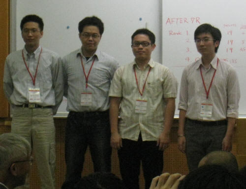
４／２９下午抵達成田機場，一行六個人，除了四個比賽選手外，小狂和焱少的女友ruru也一起同行，幫我們打理其他外務，會場在「國際奧林匹克紀念青少年綜合中心」，環境十分清幽，溫暖的陽光從翠綠的葉子中透過來，加上涼風徐徐，一整個舒服，其他三人都是國際賽老手，直呼我幸運，第一次出國比賽就遇到這麼舒適的地方，日本人果然用心啊。
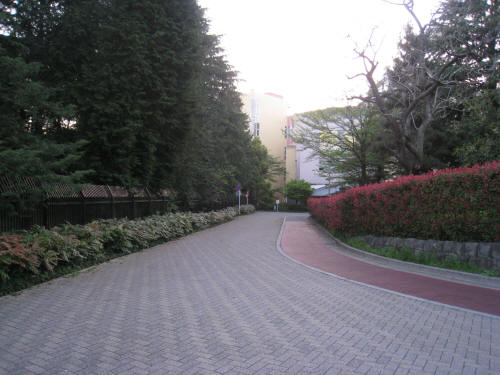
晚上開幕典禮更是令人興奮，俗話說百聞不如一見，以前只能從書中或網路上仰望的名人，一個個出現在我面前，中村茂、長谷川一人、河村典彥、山口釉水、磯部泰山、石谷信一、飯尾義弘、岡部寬、賀茂雪、Vladimir
Sushkov、Tunnet Taimla、Aivo Oll、Ants Soosїrv、曹冬、李一等人，都是五子棋界赫赫有名的人物。
主席三森政男前輩，簡單致辭後，開始抽籤並介紹各隊參賽選手，我們抽到６號，前幾輪將會先對上俄羅斯、愛沙尼亞和日本１隊這些強隊，最後一輪對中國，這樣的對戰組合大家都很滿意。
第一輪：俄羅斯 Vladimir
Sushkov
Vladimir Sushkov是該年的世界冠軍，曾在世界盃ＡＴ拿過好幾次亞軍，去年終於如願以償登上冠軍寶座，坐下後偷瞄了他一眼，看他兩眼直瞪著我，殺氣騰騰，令人不敢直視，但之後幾天和他相處，感覺人還蠻NICE的，不過也笑與不笑時比較起來反差真大。
第一輪
黑：587
白：Vladimir Sushkov 開局 勝
賽前就猜測會出現多打點的開局，實戰果然開出花月六打，想了想昨天研的變化，決定拿黑，白６後的變化不太熟，選擇防守反擊的方式，11做兩線，12穩穩的蓋住其中一個活二，13再防，14活三問應手，兩邊都有後續，感覺擋左邊不易控制，白子右邊可能會佈得沒完沒了，而選擇擋右邊，寄望那遙遠的黑５能發揮作用，16,18是預期變化，立刻下出準備好的19,21，22再佈一手，23應該最強，24活三，一直以為白下方沒勝，加上黑棋終於連回那遙遠的第五手，後面又有進攻的手段，一時見獵心喜，沒怎麼想就下了25，結果白簡單雙三就勝了，最後黑被抓長連禁。
25反擋應該還有戲，白似乎沒VCT，黑右下有VCT，但我當時完全沒注意到。
這輪我們靠焱少在Maxim
Karasev表演大半盤之後，在角落漂亮的取勝，以及小u在漏算對手可做VCF下情況下，還能臨場計算出唯一防點，最後解決對手，跟奪冠熱門的俄羅斯隊打平，第一場雖然輸了，但對手的棋路幾乎都在預期，感覺狀況還不錯。
第二輪：愛沙尼亞１隊 Tunnet
Taimla
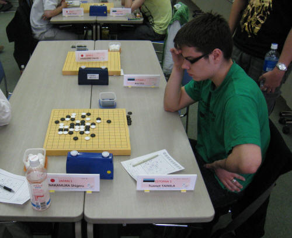
對手Tunnet Taimla是２００３年的世界冠軍，一直都是ＡＴ常客，去年則拿到亞軍，也是個不可小覷的對手，但比賽開始後卻還不見人影，過了幾分鐘後才珊珊來遲，簡單問候幾句即開始比賽。
第二輪
黑：Tunnet Taimla
白：587 開局 勝
賽前臨時決定改開明星，Tunnet自然選黑，前７手正常，第８子許多點都被終結了，只好下出實戰這個８，Tunnet這子想了很久，下在我最不想看到的９，之後開始一路挨打，實戰白10似乎還沒研出勝，就下下看吧，11做VCT，白棋的策略是想從中間把黑子斷開，13擋住白雙三點，也在左下製造攻勢，14若防在下方對黑子沒威脅，也難以消弱黑子優勢，更擔心他會在上方佈子把白子包起來，只好下在中間繼續切開黑子，這樣至少還有點資源可以搗蛋，15仍是強攻，16繼續貫徹策略，17先拓展空間必然，否則會被白棋先佔，19集中火力，當時直覺攻得太直接，下方應該沒勝，20考慮了好幾個防點，但都沒法算的很清楚，就選擇穩穩的利用四三前的先手來防，21還蠻擔心在他擋在上方的，22繼續做四三前來防守，23塞中間黑還是牢牢的掌握先手，24擋黑子要點，確定黑下方無法取勝，25,27蠻意外的，後來算到黑29後就說的通了，28沒看到其他好點，29如期出現，下方有兩套VCT，白30無奈的擋在中間，讓黑31先在上方落子，感覺右上黑又有攻勢，32感覺是要點，33後上方下方都可進攻，34若單防覺得太弱，實戰的34應可下，35拓展空間，37做棋，38很想擋在左方，但黑子似乎可從上方連回右邊，所以還是求穩，41~45建立了連回去右方的路，但黑要勝好像還欠一手，47活三暗藏殺機，若擋在Ａ位則黑可勝，48不知先衝左邊的四讓黑長連會不會較好，被黑49蓋到後白不太舒服，50活三進攻，53做VCF有點意外黑未必較好，或許他已算出白沒勝才敢這麼下，54活三防黑子VCF，56下在57沒算出勝，所以想先破壞黑子優勢，沒注意到57後黑又有兩組勝法，58又無奈了，幸好黑子好像也沒空間取勝，這時雙方時間也快見底，60感覺黑沒勝，所以擋在下面，64後確定左上方安全，68衝四多餘，反倒讓黑子多了一些機會，直接下70就好，71做VCF，算了72後沒勝，黑在左下虛晃幾下接時間，81後一度以為黑勝了，還好是自己眼花，白可衝四擋住，83後黑子求和，但我發現這時白上方有個四四禁可以抓，Tunnet受到時間壓力沒注意到，僥倖獲得一勝，還記得當時Tunnet下出敗著後，我已掩藏不住內心的興奮感，落子時手無法控制的顫抖著，連在旁觀戰的隊友都能明顯感受。
這局讓我見識到高手讀秒的功力，在最後二十手前時間就所剩無幾，一度不到２０秒，但Tunnet表情中看不出慌張，仍非常沉穩的落子，令人佩服。
第二輪ko1發揮強大計算能力，花了一個小時算出超複雜VCT，第一天對戰成績和俄羅斯及上屆冠軍愛沙尼亞皆平分秋色，且四人勝場皆開張，大家心情都很不錯。
第三輪：愛沙尼亞２隊 Paul
Valjataga
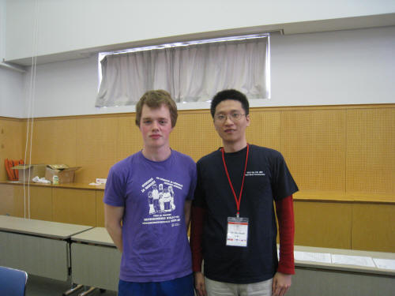
第三輪
黑：587 勝
白：Paul Valjataga 開局
對手開寒星五打，賽前有小小研究，感覺黑不錯，前13手正常變化，14印象吳鏑曾在網上下過，黑頗優，臨場一時想不起來那局的下法，自以為算清變化，大膽的做出兩個活二，之後立刻發現自己誤算，黑棋顯得單薄，加上靠近盤端，深深後悔自己太衝動，16正常，17只好改採先消弱白子，並想辦法先在下方動手，18感覺下在左邊一格較好，實戰白18沒攻勢，黑19繼續佈子，20擋在要點但白棋還是沒東西，21再佈消弱白子右方優勢，黑下方活二很多，較不擔心白子下在方搞怪，白22做了三線，被黑子幾個活三化解，32似乎保守了些，黑33佈二線，稍稍牽制白子右方，34,36白棋沒得到什麼好處，38更是奇怪，黑39先做四三前，防止白利用右下方的死三，41控制白子外圍，42又往內塞，43擋中間後黑上方有機會可做VCF，44再內塞，45順勢佔住白子三線位置，白棋至此已被包圍，外勢全失，46只好回防，47再蓋白子的死三並做兩個活二，48把左邊都讓給黑棋，50感覺多餘，左邊黑壓壓一片，52後黑簡單取勝。
這輪隊友們早早收拾對手，只有我在拖台錢，４：０完封對手，雖然高興，但下午將遇上日本１隊，簡單吃了點東西就回房休息。
第四輪：日本１隊 中村茂
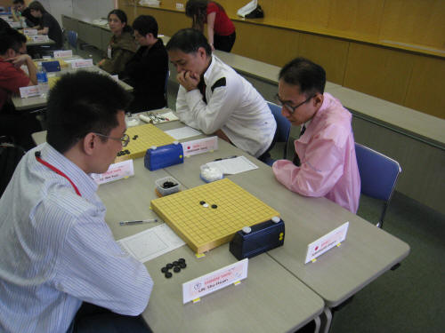
這輪的對手是連珠界鼎鼎大名的一代宗師中村茂，在來日本之前，一直認為中村會打二台，因他曾說過一台通常是日本名人的位置，有幸能夠遇上傳說中十三段的棋手，興奮自然不在話下，今天中村穿了件粉紅色的外套，搭配白襯衫，很有喜感，和一般日本人一樣，禮數週到，臉上掛著靦腆的笑容，頗為親切，完全沒有架子。
第四輪
黑：587
白：中村茂 開局 勝
比賽一開始，中村若有所思，但遲遲未落子，接著起身先在會場繞了十來分鐘，看看其他人的局面，回來後在棋盤上啪啪啪三聲，拍出峽月７打，動作不大但頗具氣勢。
根據賽前的研究，這應該是黑有優勢，於是持黑，中村下出白４後，我心裡叫好，剛好是賽前最多研究的４，暗想好七打的位置後，一子一子的放在棋盤上，心裡期待著中村的選擇，果真，兩人像是約定好似的，到白10都如預期，但真的會那麼順利嗎？我開始注意到白14這個位置，怎麼感覺白棋優勢無比具大，開始擔心中村下在這個位置，11,13是我印像中黑唯一可下的地方，14中村果然落在我擔心的地方，怎麼算白都大優，15找不到更好的點，17上擋會被禁雙三，之後掙扎了幾手還是不行。賽後其他人告訴我，他們今天才在討論這個５，說峽月開局這變化是白必勝，誤以為我有聽到，是溪月才能靠盤端防住，但我一直以為峽月也可，還很高興的照著必敗下，輸的太冤了，好不容易才有機會和一代宗師對決，結果卻是如此簡單敗了，心裡鬱悶非常。
這輪焱少與現任名人長谷川下和，小u則幹掉曾經也是名人的山口釉水，比分1.5：2.5，還在可接受範圍，後來得知一個好消息才讓我心情好些，就是預賽的前四強還要再打三輪循環賽來決定冠軍，那我就有機會和中村再次交手了。
第五輪：烏克蘭和亞賽拜然聯隊 Piddubnyy
Kostyantyn
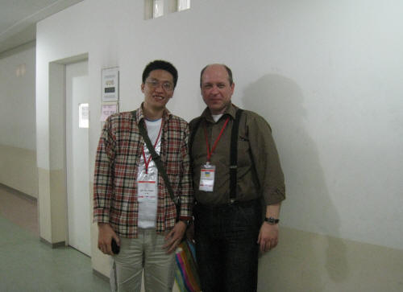
比賽開始前有點小插曲，我們誤以為今天是休息日沒比賽，早上也起的比較晚，還在計劃著下午要去外面晃晃，大家都慢條斯理的，直到聽到急促的敲門聲，原來是Ayako，他不知是用中文還是日文說著：「五輪、五輪」，一開始聽不太懂，隨即會意是第五輪的比賽，看看時間，已經開打了，趕緊叫醒大家，對手是烏克蘭和亞賽拜然聯隊，穩穩的下應該還應付得來，我和ko1先行小跑步到了會場，己經開打十幾分鐘了。
Piddubnyy主動握手，我對遲到感到不好意思，連忙道歉，他拿出一個印有列寧的銀幣送我，問我知不知道上面的人是誰，當下只覺得銀幣上的面孔和他本人好像，也回送他自己做的小棋盤。
第五輪
黑：587 開局
白：Piddubnyy Kostyantyn 勝
稍微喘口氣，心想穩紮穩打就好，開出長星一打，Piddubnyy想了會兒，持白轉成疏星，我心想一打他應該也熟，所以選擇另一個５，想下風塵流的變化，６７正常應對，８印象中黑優，白10有看過沒下過，11還是求穩，到17互相糾纏，18改下19也許較好，19被黑子下到後，感覺黑外勢不錯，黑21得到佈子的機會，我預想在下方發動最後的攻勢，但目前還不是時候，先在其他地方尋求支援，21先在上方控制空間，22防在子力的交點，23繼續控制白子，但下了後便開始後悔，24一落，上下方的黑子難以連繫，這裡花了不少時間，25只好再控制空間，並希望白子下的強硬一點，讓我有機會形成較大的優勢，但白26還是不急，27破壞白子交點，28單防，我看左上右下都難以借用，29直接發動攻擊，30~33不意外，34本以為他會蓋住死三，但他卻往中間活三，35,37強攻，38似乎也有其他較強硬的手段，但他選擇實戰的38,40穩固防守，41,43先把可能被白棋佔的點衝掉，45活三希望他擋上方也許黑還有機會從下方連過去，但白子仍然不給機會，49在上方佈子尋找機會連到左下方，50看出我的意圖破壞上下黑子的連接，51,53連接黑子，想在上方強攻，白54後提和，但我想做最後一博，55再連接子力，56後黑好像看到一絲取勝的希望，但找了半天都沒看到勝，又做57,59，60外擋，61直接找攻擊線多的地方丟，63接時間，但是沒看到勝，想說把變化都下掉再來提和，72之前白都是防比較穩的那一邊，這時我提和，對手不知道說了什麼，我就繼續下73，74本以為他會上擋，又花了些時間算上方有沒有東西，75後對手卻遲遲未應，我瞄了時間一眼，0:02，0:01，End，還沒會意過來就超時了＞＜，原來我落子後忘了按計時器，莫名其妙輸了這局，之前小u就有提醒過我這個壞習慣，結果最後還是．．．
我相當自責，Piddubnyy Kostyantyn還說他整局都沒進攻的機會，到手的0.5分飛了，但隊友完全沒有怪我的意思，說盤面上沒出錯就好，讓我稍稍釋懷，下午確定沒有比賽，我們請田村一誠及Ayako帶路，到新宿去採購親友們託買的東西，還去拍了大頭貼，幾個人和我一樣生平第一次拍貼，連鏡頭在哪都不知道，才發現這東西已經先進到令我匪夷所思地步了，一眼望去像是專業的圖片編輯軟體，感覺有夠複雜。晚餐則排了很久的隊，終於吃到了道地的壽司，雖然過得很愉快，但我還是巴不得立刻進行下一輪比賽，好忘掉今天輸棋的感覺。
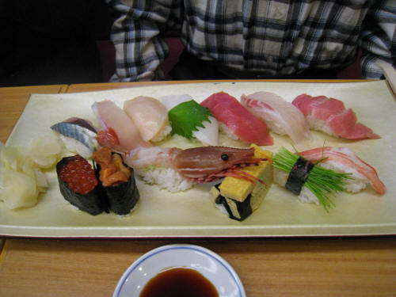
本輪因烏亞聯隊只有三人，小u不戰而勝，焱少ko1也順利過關，睡前算了一下，只要第六輪對日本２隊拿下3.5分即可確定晉級四強。
第六輪：日本２隊 大角友希
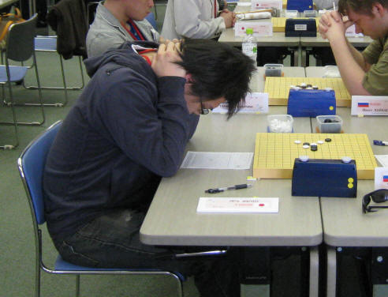
對手是之前拿過世界盃BT冠軍大角友希，但我還是習慣稱呼他以前用的名字賀茂雪，他開了我第一局輸給Sushkov的花月六打，很想拿黑子，但又不確定第六打要怎麼下，突然想到之前在網上曾下過的一個變化，就拿來試試
第六輪
黑：587 勝
白：大角友希 開局
賀茂果然選了這個５並迅速的下出白６，我也立刻下出７，白８意外，之前研的結論是下在Ａ位較強，一時想不起來黑９擋哪邊好，回憶了一下，印象中這個變化的譜下面有顆黑子，那就擋下面吧，對手白10後，感覺和白子纏鬥並不怎麼優，決定先11活三再說，他沒怎麼想就下了12，本想要開始防守的，突然看到13好像不錯，印象中有研過，但不確定黑是否有勝，這手下得有點衝動，當時還沒看到黑怎麼贏，感覺黑子就算沒勝應有機會再回防，賀茂也許沒考慮到這個活三，開始長考，我也跟著細算，才發現白好像沒防了，賀茂想了近一小時才下14，我立刻應了15，16手是我當時認為的強防之一，但我已算清，所以很快便拿下這一勝，回到台灣後拿電腦算了一下，原來16在Ａ才是最強，當時誤以為黑可做VCF簡單勝，完全沒考慮到白棋左邊可以做出反擊，棋力仍有待加強。
這輪小u以流星變化順利戰勝衝動的玉田陽一，ko1面對長尾紀昭怪聲連發下仍不為所動將之解決，焱少大概為了報答昨天田村一誠的帶路之恩，使用捨近求遠的戰術，再加上過人的演技，把我們三個嚇個半死。將日本２隊清台後，確定晉級四強，士氣大振，下午對中國隊的比賽也就輕鬆應戰。
第七輪：中國隊 李一
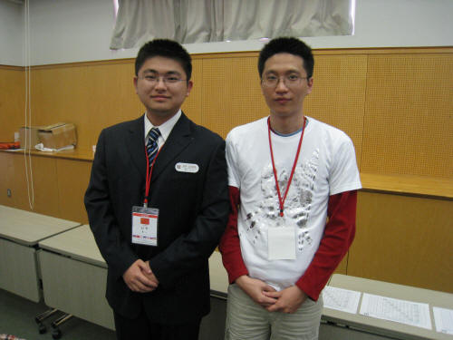
中國隊的一台李一，也許在台灣很多人沒聽過，但在大陸己小有名氣，拿過許多比賽的冠軍，也算是我比較了解的一位棋手，本次比賽全程西裝筆挺，看得出他對這次比賽的重視，賽前特別準備流星一打，本以為他會擔心我下出容易和棋的變化而持白，但我多慮了。
第七輪
黑：李一 勝
白：587 開局
李一選黑後，前８手正常，９手選擇較常見的變化，並沒有下出我期待在14位置的變化，倒不是有什麼特別研究，只是想見識一下李一的攻撃力，到14手也都正常，雙方都沒花什麼時間，15手較令我意外，16後感覺白不錯，17正常，18分斷上下黑子，19也分斷白子，20第一感是Ａ，黑左邊空間不太夠，仔細一算，黑先衝四再下33的位置很危險的樣子，單防似乎守不住，白先活三的變化算不太清楚，若下在Ｂ，估計黑會佔Ａ，又顧忌右邊有Ｃ或Ｄ等強點，最後決定下20的位置，企圖把黑子攻勢導向左邊盤端，21比預想的讓我很難受，算了好幾個防點，黑子總是能把子力連到右邊，只好下出這個22，23,25如預料中出現，26在考慮實戰和Ａ的位置，不想讓時間落後太多，就下出實戰的26，29意外的好點！算了幾個點，只剩30沒看到勝，黑若下方局部強攻，白有個反四可牽制黑子，李一思考了一陣子，還是給出正確的手順。賽後的研究，這個26是必敗的，黑子之後的應對正確，一直印象有看過這譜，但已找不到記錄，記得白棋可以醜醜的防住黑，也許是26改在Ａ點佔住六線，但不是很確定，如果20改在Ａ可以成立那也不錯。
這輪焱少中了曹冬的研究，靠ko1和小u分別戰勝殷立成和奚振揚獲勝，我們和中國隊也打平，預賽七輪的成績，日本１隊、愛沙尼亞１隊、中國隊各以19分並列領先，台灣以18.5分緊追在後，這時我才驚覺，原來我們的實力並沒有和連珠強國差太多，要是我沒忘記按計時器，那四隊就平手了。
賽後獲知開會結果，大會決定前四強相互對戰分數要帶進決賽成績，所以一開始就以日本一隊７分，領先愛沙尼亞一隊６分和台灣中國的５.５分，在預賽時的開局順序和決賽相反，依成績我們隔天先對日本及愛沙尼亞，最後一天對中國。
又有機會和中村茂交手了，賽前還在擔心日本會不會換上後補，這天早上不知哪冒出來一群學生，把餐廰塞爆了，長長的人龍還排到了門口，我們便決定去便利商店買東西果腹，賽前看了下對手的牌子，心裡暗自叫好，又對上中村了。
第八輪：日本１隊 中村茂
第八輪
黑：587 開局 和
白：中村茂
雖然對李一開流星輸了，但自認策略還不錯，不論持黑或白都有所準備，於是再度開了流星一打，中村選了較弱的白４，黑５我個人覺得最強，白６意外！中村的想法應是想引導我走陌生的局面，當下有點擔心會著了他的道，但回頭想想，擔心也沒用，氣一沉，老老實實的計算了三十分，直覺黑直接中間活三並不好攻，若不慎落入後手，白棋的反擊很強，最後決定下實戰的小三角，中村或許也沒考慮到這手，長考近一小時才下出白８，９～12正常，13我花了很多時間在想g5，不知不覺時間已和中村相差無幾，最後還是選擇較穩健的13，14手中村並沒有多想，15手也花了點時間計算白的反擊，至20正常，21,23,25是常見進攻手段，若有機會拉死四至左邊空間，或將左右子力相連，應有機會可取勝，中村26也很機警，一方面控制了黑棋的死三，另一方面防止黑棋活三後連回右邊，白棋這時子力較內側，27,29做VCF順勢將白包住，30單蓋死三似乎是算準黑棋下方沒勝，自己算了一會兒也沒發現勝法，31,33先手消弱白子資源，白下出34後，還以為上面被抓四四禁，結果是自己看錯，對這個34有點不解，難道是接時間？可是白棋好像虧了，36回防，37~41再先手破壞白子下方可能出棋的點，43單蓋使白子左右不能連繫，且白子還要防一手，45再佔個便宜，47再來守白子右方，這時盤面上空間已不好發揮，時間中村剩12分，我剩９分多，決定提和，中村也爽快答應。
總算下了一場還算滿意的棋，能和心目中的連珠之神下成和局我已心滿意足，這輪不幸0.5：3.5大比分敗給日本隊，看來爭冠的希望渺茫，改把目標放在第三名。
和幾個日本棋手下過後，發現他們下棋時有個習慣，思考時口中唸唸有詞，但還不至於影響對手，賽前曾聽說賀茂雪是發怪聲大王，不過這次好像有收斂一點，實際看到後覺得很有趣，一直想偷笑。
第九輪：愛沙尼亞１隊 Tunnet
Taimla
第九輪
黑：Tunnet Taimla 開局 勝
白：587
下午這場又對上Tunnet，上一局僥倖獲勝，這局不會再有這種好運了，他開出浦月六打，想了下小ｕ對山口釉水那一局，拿白應該ok，但他第六個打點擇出印象中是白必勝的打點，之前沒有仔細研過，黑19之後沒印象，決定20,22先消弱黑左邊優勢，24誤算，25原以為黑子只能下40的位置，實戰的25讓我讓我騎虎難下，26~38打爛黑子左邊，也許有更好的下法，實戰讓黑多了一些資源可利用，之後賭右邊沒勝，但Tunnet也非浪得虛名，41下在我最擔心的位置，42不知如何是好，算了這個42沒發現簡單勝，但Tunnet馬上表演給我看，43拓展空間，45做棋，白棋over，回台後網友提供白20後的勝法，AB先衝再下C即可勝。
這輪我們被０：４掃台，穩坐第四名寶座，最後一輪也顯得格外輕鬆，晚上我們一行人和河村典彥、岡部寛、賀茂雪、田村一誠、小野孝之、Ayako等人，一起到附近的居酒屋吃東西，這才見識到日本人的酒量好像都不錯，一杯接著一杯，我平常沒喝酒習慣，才喝不到半杯就腦袋昏昏，焱少和ko1也以明天還有場硬仗為由，不敢多喝，倒是小u喝了不少。
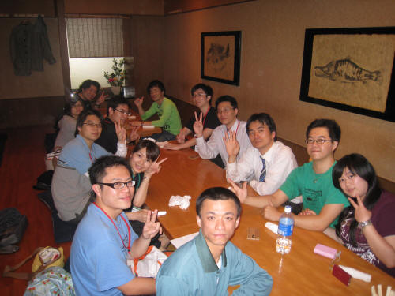
第十輪：中國隊 李一
第十輪
黑：李一 開局 勝
白：587
本想說最後一局要好好下的，李一開了嵐月四打，我對嵐月不怎麼熟，拿白下了立二，李一早有準備，沒多想就下出四打，每個都看過，各各沒把握，選了一個有稍研過的５，到６～13應是雙方較強的變化，剛好之前研到這沒繼續研下去，只好靠自己計算，14感覺白棋型不錯，印象中黑應錯會輸，黑好像也沒法攻，於是沒多想就下了，想當然這種憑感覺下是不可靠的，下場就是被秒殺，旁邊焱少對曹冬第五手都還沒擺出來呢，最後一局下成這樣實在難看，也對李一很抱歉，回去看了下棋譜，這個14標記必敗，不知情的人大概會以為我放水吧。
這局很快就結束了，在等待其他對局結果的同時，找李一研了幾局棋，深感他確的是位強大的棋手，判斷很精準到位，希望以後有機會再交手，不敢說一定要贏，只要下的精采也就足夠了。
幾天來觀察李一下棋時，發現個有趣的地方，若要判斷他目前的局面好壞，從枱面上的表情並不容易察覺，但枱面下卻可看出一些端倪，曾在一本書上看過，一個人身體最誠實的地方在他的腳，若有機會看他下棋的人不妨留意一下。
我想這輪的結果我必需負一些責任，主將太早敗陣下來，難免會影響隊友的心情，僅靠小u拿下唯一的一和，免於連兩輪被橫掃，但大家似乎看得蠻開的，仍開玩笑說昨晚喝最少人的反而輸得最快，喝最多的下成和局，那早知應該喝個不醉不歸才對。
最後總計，中國和愛沙尼亞１隊分數相同，比較輔分，由中國隊勝出。
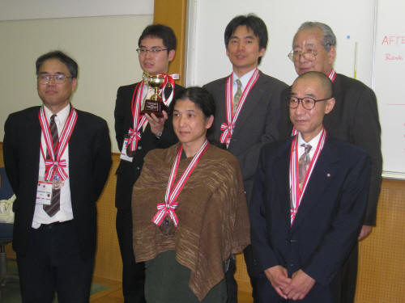
第三名：日本１隊
後排左起，岡部寬、河村典彥、磯部泰山，前排左起，長谷川一人、山口釉水、中村茂
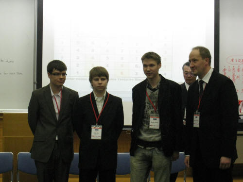
第二名：愛沙尼亞１隊
左起，Tunnet Taimla、Aivo Oll、Andry
Purk、Ants Soosїrv
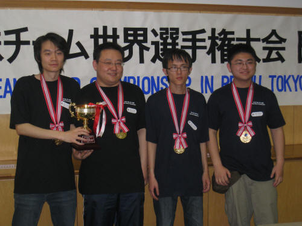
第一名：中國隊
左起，曹冬、殷立成、奚振揚、李一
晚上的閉幕晚會，在另一會場舉行，主辦單位準備了各式佳淆供大家享用，在幾杯黃湯下肚之後，各國選手也歌興大發，紛紛輪流拿著麥克風唱著各種語言的歌曲，使得晚會更為盡興。
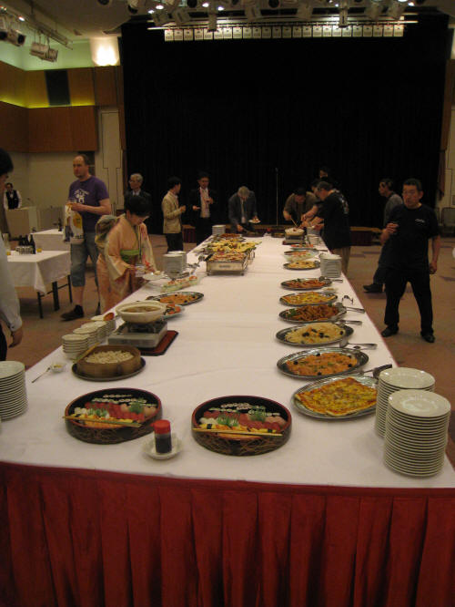
整體來說這次比賽下的棋質量不太好，能拿到三勝一和算是非常好運，也讓我收獲很多，除了實際見識到金字塔頂端的大師們盤面上精確的細算及控制能力，下棋心態也是重要的一環，面對不熟悉的局面及時間的壓力下，也能從容的應對，仔細計算各種可能的變化，賽前的研究準備也還差別人一截，此外，充份的休息也很重要，以前從未參加過這麼密集的比賽，這才體會到長時間下棋十分耗費精神，回國之後整整兩天，一有空就倒在床上，總之，還需多加磨練，各方面都有進步的空間。
這次比賽最感謝的，還是同行的所有夥伴們ko1、焱少、小u、小狂、ruru，沒有你們的幫助，我無法獲得這樣的成績，沒有你們的鼓勵，也許我早在第五輪就已倒下了，沒有你們參與，這次日本行將會失色不少，希望很快有機會，能和你們再一起享受比賽，一起享受並肩作戰的感覺。
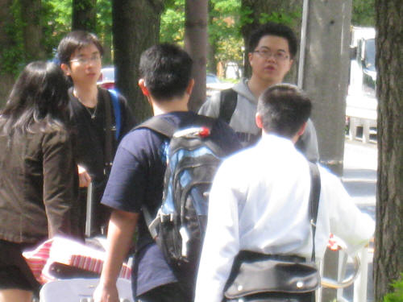
今天是10/16，心血來潮，研了一下和中村第二次的對局
發現31往左邊拉三就贏了，不過被32四三實在太可怕了，所以當時完全沒考慮到這手，35擋中間後白子全被牽制住，之後黑在左邊可勝
實戰31選擇求穩的走法，到最後黑還有一些進攻機會，但當時心裡感覺盤面快失去控制，沒法看清盤面，就草草和棋了，不過時間也很緊迫，也許最後也會和吧